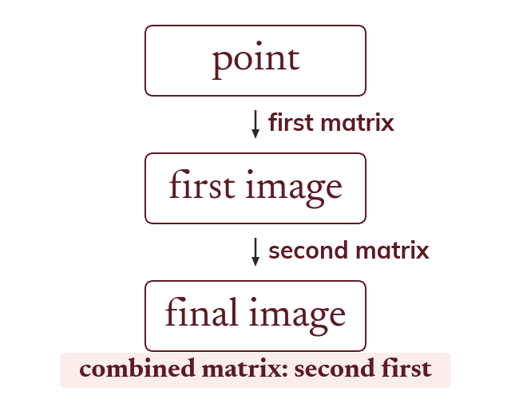
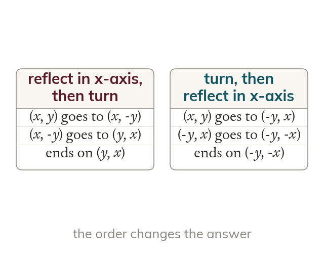
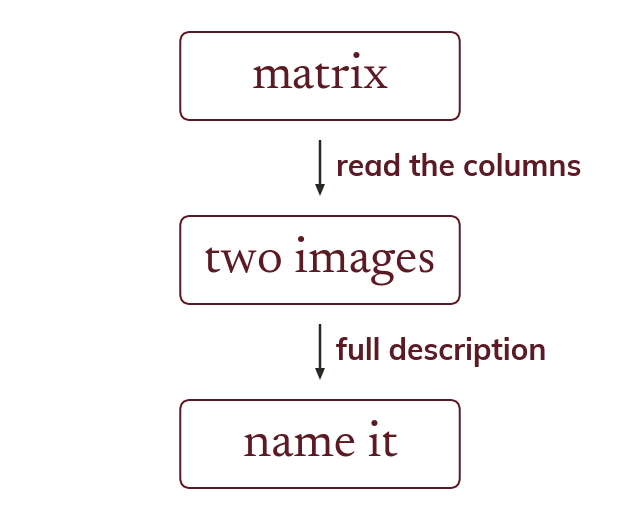
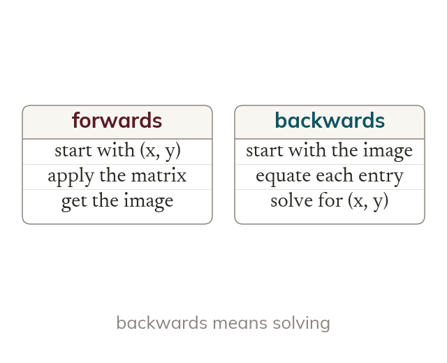

Two transformations done one after the other collapse into a single matrix, which is the whole point of writing them as matrices - but the product goes in the reverse of the order you apply them, and that is where this chapter loses most of its marks.
By the end you’ll know…
Two transformations applied in succession are equivalent to a single transformation whose matrix is the product of the individual matrices, with the SECOND transformation written FIRST. Matrix multiplication is associative but not generally commutative, which is why order matters geometrically.
By the end you can
GFMFind the combined matrix for two successive transformations and use it to find the image of a given point.
GFMDescribe geometrically the single transformation a combined matrix represents, and work backwards from an image point to find the original.
Work down the page at your own pace. Write every answer in your book first, then click to check it.
01
Do Now
About 5 minutes
1
True or false: for two matrices A and B, AB always equals BA.
False - matrix multiplication is not generally commutative, which is why transformation order matters.
2
A transformation matrix maps (1,0) to (0,1) and (0,1) to (-1,0). What single transformation is this?
A rotation of 90 degrees anticlockwise about the origin.
Remember these?
LAST LESSONApply the matrix 0-110 to the point (3, 2). What is the image?
(-2, 3) - the matrix times the position vector 32.
LAST WEEKDescribe the locus of points exactly 5 cm from a fixed point O.
A circle of radius 5 cm centred on O.
LAST TERMWork out (8 × 10⁷) ÷ (2 × 10³), in standard form.
4 × 10⁴.
LAST YEARy is inversely proportional to x, and y = 12 when x = 2. Find y when x = 8.
k = 24, so y = 3.
02
Learn
Read each card, then follow the worked examples one step at a time.

The order of the product
The matrix for two transformations in a row is their product. The second transformation's matrix is written first. The first matrix sits closest to the point.
The single matrix for two transformations in a row is a product, and it is written with the second transformation first. The first matrix acts on the point before the second one does, so it sits closest to the point.

The order matters
Matrix multiplication is not commutative. Swapping two transformations usually changes the result.
Matrix multiplication is associative but not commutative, so swapping the order of two transformations usually gives a different single transformation. A reflection then a quarter turn ends in a different place from the quarter turn then the reflection.
WORKED EXAMPLE A
Find the single matrix for a rotation of 90° anticlockwise followed by an enlargement, scale factor 3.The rotation is first, so its matrix is written last. The enlargement matrix goes in front.
Second matrix first3003 × 0-110
Multiply row by column= 0-330
WORKED EXAMPLE B
Find the image of (2, 1) after a reflection in the y-axis followed by a reflection in the x-axis.Combine the matrices with the second first, then apply the result to the point.
Second matrix first100-1 × -1001
Multiply row by column= -100-1
Image of (2, 1)(-2, -1)
YOUR TURN · a
Find the single matrix for a reflection in the x-axis followed by a rotation of 180° about the origin.
Second matrix first: -100-1 × 100-1 = -1001.
YOUR TURN · b
Find the image of (3, 1) after an enlargement, scale factor 2, followed by a rotation of 90° anticlockwise.
Second matrix first: 0-110 × 2002 = 0-220. The image of (3,1) is (0 × 3 + (-2) × 1, 2 × 3 + 0 × 1) = (-2, 6).
03
Check your understanding
Pick an answer. If it's wrong, the feedback tells you which mistake it was.
Transformation P is applied first and then transformation Q. What is the matrix of the combined transformation?
Not quite. The first transformation acts on the point first, so its matrix is written last: Q goes in front of P.
Yes. Q acts after P, so Q is written first and P sits next to the point.
Not quite. Matrices for successive transformations are multiplied, not added.
Not quite. The order does matter: a product of matrices usually changes when the order changes.
A rotation of 90° anticlockwise is followed by a reflection in the line y = x. Which is the single matrix? (Rotation: 0-110. Reflection: 0110.)
Not quite. That is rotation then reflection written the wrong way round. Write the reflection matrix first.
Not quite. You multiplied matching entries. Combine them row by column, with the second transformation first.
Yes. Second first: 0110 × 0-110 = 100-1.
Not quite. You added the matrices. Successive transformations are combined by multiplying.
A reflection in the y-axis is followed by a rotation of 90° anticlockwise. The single matrix is 0-1-10. What is the image of (2, 1)?
Not quite.(1,2) comes from the reverse order. Use 0-1-10: row 1 is 0 × 2 + (-1) × 1.
Not quite.(-2,1) is the image after only the reflection. The rotation must be applied as well.
Not quite. You rotated the original point. The rotation acts on the image of the reflection.
04
Practise
mark as you go
Checkpoint. Find the single matrix for a reflection in the line y = x followed by a rotation of 270° anticlockwise about the origin. Then use it to find the image of (1, 3). (Reflection: 0110. Rotation: 01-10.)Show your teacher before you go on
From your textbook
Section 9.5 Combining transformations (p248-251). Exercise questions that find the combined matrix for two successive transformations and the image of a point.
05
Learn
Read each card, then follow the worked examples one step at a time.

Reading a combined matrix
A combined matrix is one more transformation matrix. Its columns show where (1,0) and (0,1) go.
A combined matrix is one more transformation matrix, so its columns show where (1,0) and (0,1) go. Reading them gives the single transformation in the usual way.

Working backwards
An original point is found by solving, not by applying the matrix again. Each entry of the product gives an equation.
To find an original point, treat it as the unknown in an equation rather than applying the matrix again to the image. The entries of the product then give equations to solve.
WORKED EXAMPLE C
Describe the single transformation for a rotation of 90° anticlockwise followed by a rotation of 180°.Combine with the second first, then read the columns of the answer.
Second matrix first-100-1 × 0-110
Multiply row by column= 01-10
Transformationrotation of 270° anticlockwise about the origin
WORKED EXAMPLE D
The matrix 0-110 sends the point P to (-3, 2). Find P.Call the original point (x, y) and solve, rather than applying the matrix again.
Write the equation0-110xy = -32
Equate the entries-y = -3
x = 2
Original pointP = (2, 3)
YOUR TURN · c
Describe the single transformation for a reflection in the line y = x followed by a reflection in the x-axis.
Second first: 100-1 × 0110 = 01-10, a rotation of 270° anticlockwise about the origin.
YOUR TURN · d
The matrix 2003 sends the point Q to (6, -12). Find Q.
Let Q = (x, y). Then 2x = 6 and 3y = -12, so Q = (3, -4).
06
Check your understanding
Pick an answer. If it's wrong, the feedback tells you which mistake it was.
A combined matrix is 0-1-10. Which single transformation is it?
Not quite. This sends (1,0) to (0,-1), not (0,1). The line y = x would send it to (0,1).
Not quite. A quarter turn would send (1,0) to (0,1). This matrix sends (1,0) to (0,-1).
Yes.(1,0) goes to (0,-1) and (0,1) goes to (-1,0), which is a reflection in y = -x.
Not quite. That is only the type. Name the line: y = -x.
The matrix 01-10 sends the point P to (2, -5). What is P?
Not quite. You applied the matrix to the image. Solve y = 2 and -x = -5 instead.
Not quite. That is the image. The original point satisfies y = 2 and -x = -5.
Yes. Row 1 gives y = 2 and row 2 gives -x = -5, so x = 5. P = (5, 2).
Not quite. Write P = (x, y). Then y = 2 and -x = -5, which gives x = 5.
A reflection in the line y = x is followed by a rotation of 90° anticlockwise. Which single transformation is this? (Reflection: 0110. Rotation: 0-110.)
Not quite. The combined matrix is -1001. (1,0) goes to (-1,0), so the x-axis is not the line.
Not quite. A half turn changes both signs. Here only the x-coordinate changes sign.
Yes. Second first: 0-110 × 0110 = -1001, the reflection in the y-axis.
Not quite.y = -x sends (1,0) to (0,-1). This matrix sends (1,0) to (-1,0).
07
Practise
mark as you go
Checkpoint. A rotation of 90° anticlockwise is followed by a reflection in the line y = x. Find the single matrix and describe the transformation fully. Then find the point whose image under this single transformation is (4, 7). (Rotation: 0-110. Reflection: 0110.)Show your teacher before you go on
From your textbook
Section 9.5 Combining transformations (p248-251). Exercise questions that describe the single transformation a combined matrix represents and work back from an image to the original point.
08
Exit ticket
On paper, on your own, then check
1
Transformation Q is applied first and then transformation R. Write the combined matrix using the matrices Q and R, and say why the order matters.
R × Q: the second matrix is written first, and the first matrix sits next to the point. Matrix products usually change when the order changes, so Q × R is usually a different transformation.
2
Find the single matrix for a reflection in the y-axis followed by a reflection in the line y = x, and the image of (1, 3). (Y-axis: -1001. Line y = x: 0110.)